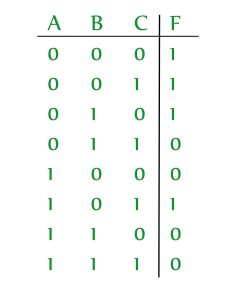
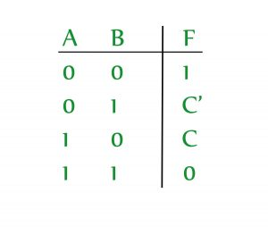
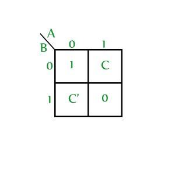
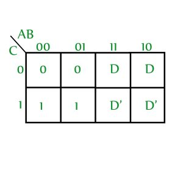
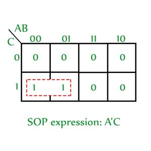
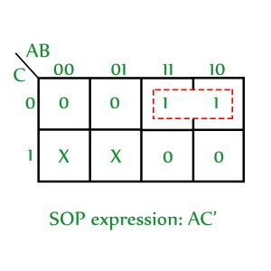
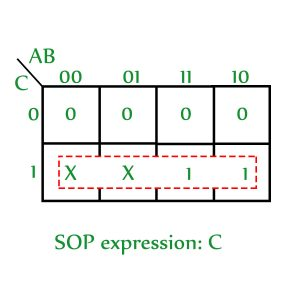

Prerequisite – Karnaugh Map (K-map)
K-map is the best manual technique to solve Boolean equations, but it becomes difficult to manage when number of variables exceed 5 or 6. So, a technique called Variable Entrant Map (VEM) is used to increase the effective size of k-map. It allows a smaller map to handle large number of variables. This is done by writing output in terms of input.
Example – A 3-variable function can be defined as a function of 2-variables if the output is written in terms of third variable.
Consider a function F(A,B,C) = (0,1,2,5)

If we define F in terms of ‘C’, then this function can be written as:

And the VEM for this is:

Advantages of using VEM –
- A VEM can be used to plot more than ‘n’ variables using an ‘n’ variable K-map.
- It is commonly used to solve problems involving multiplexers.
Minimization procedure for VEM – Now, let’s see how to find SOP expression if a VEM is given.
- Write all the variables(original and complimented forms are treated as two different variables) in the map as 0, leave 0’s, minterms and don’t cares as it is and obtain the SOP expression.
- (a) Select one variable and make all occurrences of that variable as 1, write minterms (1’s) as don’t cares, leave 0’s and don’t cares as it is. Now, obtain the SOP expression.
(b) Multiply the obtained SOP expression with the concerned variable. - Repeat step 2 for all the variables in the k-map.
- SOP of VEM is obtained by ORing all the obtained SOP expressions.
Let’s apply the above procedure on a sample VEM (X is used to represent don’t care):

Step 1: Write all the variables as 0 (D and D’ are considered as two different variables), leave minterms, 0’s and don’t cares as it is and obtain the SOP expression.

SOP obtained: A'C
Step 2:
(a) Replace all occurances of D with 1, all occurrences of D’ with 0 and all 1’s with don’t care. Leave 0’s and don’t cares as it is.

(b) Multiply the obtained SOP with the concerned variable.
SOP obtained: AC'D
Step 3: Repeat step 2 for D’
(a) Replace all occurrences of D’ with 1, all occurrences of D with 0 and all 1’s with don’t care. Leave 0’s and don’t cares as it is.

(b) Multiply the obtained SOP with the concerned variable.
SOP obtained: CD'
Step 4: SOP of VEM is obtained by ORing all the obtained SOP expressions. Therefore, the SOP expression for the given VEM is:
A'C + AC'D + CD'